My Projects
-
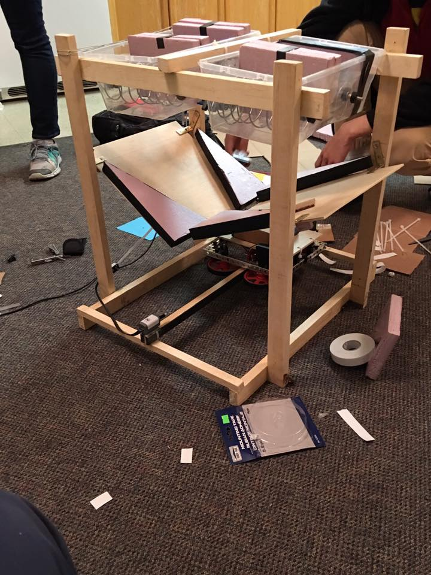
Automatic Sandwich Maker
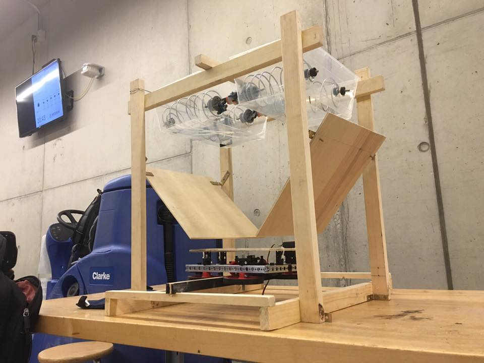
Introduction
This project was done for my 1A final project. The purpose of this project is to implement what we've been study into a real world situation. This machine is designed specifically for university students who don't have time to cook breakfast or launch; we build a machine that makes lunches for them. It is only a proven of concept, but still, it is designed and programmed by my teammates and me . Every piece of structure or program was built from scratch.
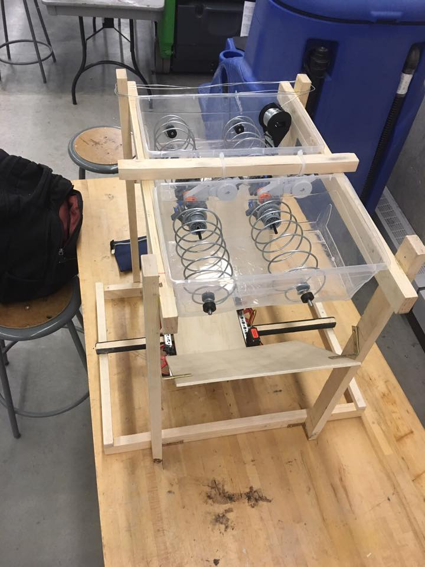Explanation
For the actual product, we are aming to combime the food preservation system, food dispensing system and maybe the paying system for some special situations together. The idea is to ensure a fresh sandwich produced in less than 30 seconds with only a push of a button. To achieve those aspects, we designed the simplest yet most functional design that best suits our need.
MechnicalComponents
There are three main parts of this robot
First, the dispensining mechanism. As you can see from the picture to the right, the two mortors are connected to the hand-crafted strings on each side with a dual-directional lock fixed in between them. The dual-directional separates the direction of turning of the two springs which redeces the amount of motors used(from 4 to 2).
Second, the sliding mechanism at the bottom part of the robot. Once the ingridients are being pushed out by the springs, the collector fixed on a motor driven sliding plate will position itself at the middle ot the machine and collect the ingridients. After all ingridients are being collected, the slider will move to the edge of this machine and make it convinent to pick up by customers.
Third, food preservation system. When the machine is not in use, all the food will be preserved in two of the transparent boxes fixed on top of this machine. Ideally, we are going to design them as a small customized fridge, however, considering the budget, this design is being abandoned.
-
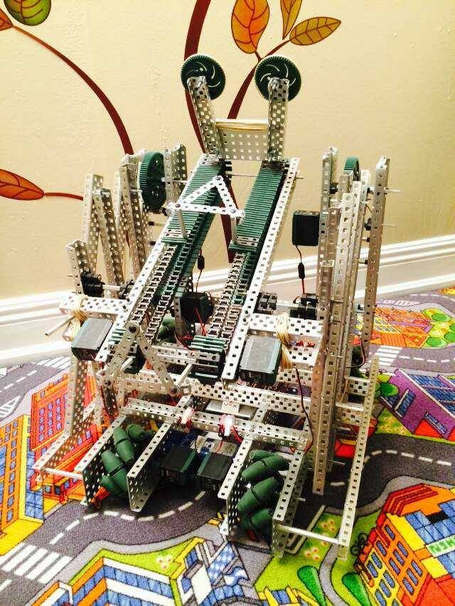"Thunder2"
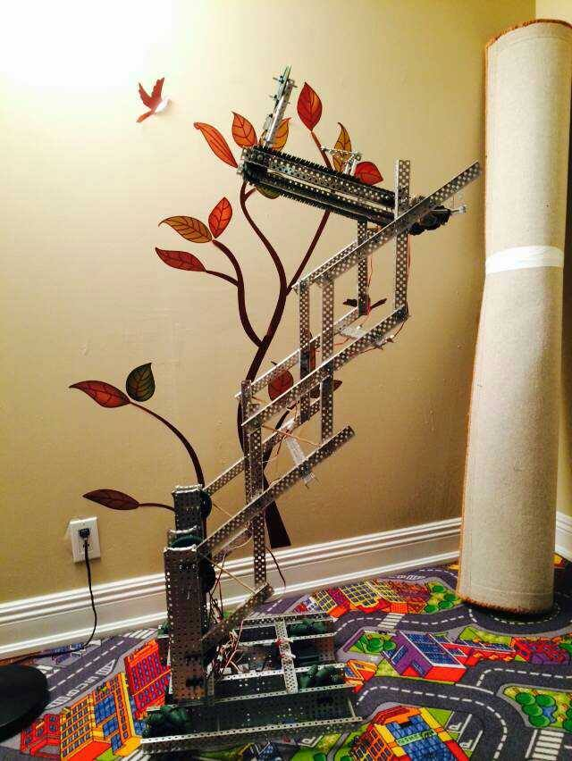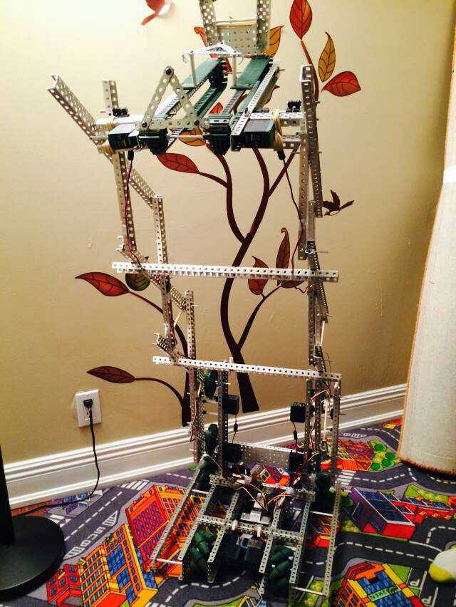
Introduction
ThunderIce is the name of our team. As the founder and the creator of the team, I would say, every competition was tough but not though enough to take us down. The Team started out with only 2 people(including me), we were doing everything on or own when building this robot. We've designed, built, programmed, tested and competed all on our own. The last time the school robotics team existed was 8 years ago, which makes us the first team after 8 years. Without any help from the school, we learn everything from scratch and was able to expend to have 10 members in just 1 year. Because of our strong motivation, the shool finally desides to fund us and the robotics clubs also becomse one part of our school tradition.
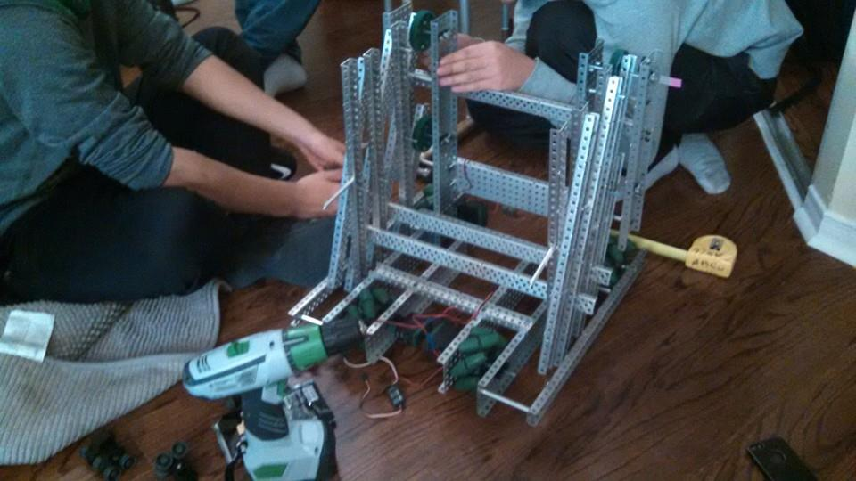Explaination
This robot is being designed specifically for the Vex Robotics Competition. For coemption of year 2016, the goal of the robot is to be able to pick up both tube-like objects as well as cube-like objects, and stack the cube on to the tubes in both autonomous mode and remote control mode. We deciede to use the scisor mechasm to expent the robotic arms due to the limitation of motors and the amount of weight we have to carry. T
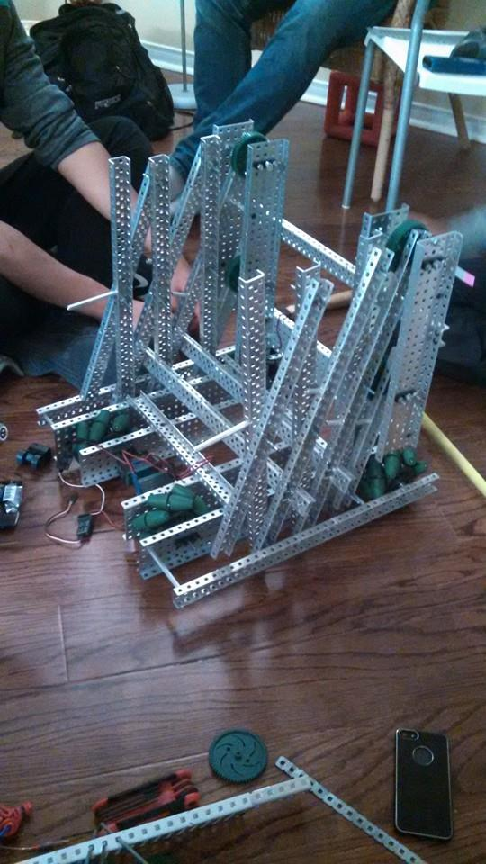Designing And Building
The deign was not too hard, the hard part is the attention to details. For example, in this picture, we were trying to fix the problem with the mecanum wheels. Even a slight disposition of the mecanum wheels will reduce the agility of the robot. Also, the connection between the wheels and the motors have to be carefully designed to stay durable during the competition.
Testing
To finallize this robot, we tore the robot apart for 5 times to fix problems and to make adjustments to some details to ensure the best performance out of it. We spent more than 3 weeks on testing the automatic piolting of this robot. However, sensors are not up-to-date, and our algorighms are not that strong to be able to handle such complex environment, we decided to go for the simplest solution, abandont some of the motion sensors and replace it with simple algorighms as a substitution
-
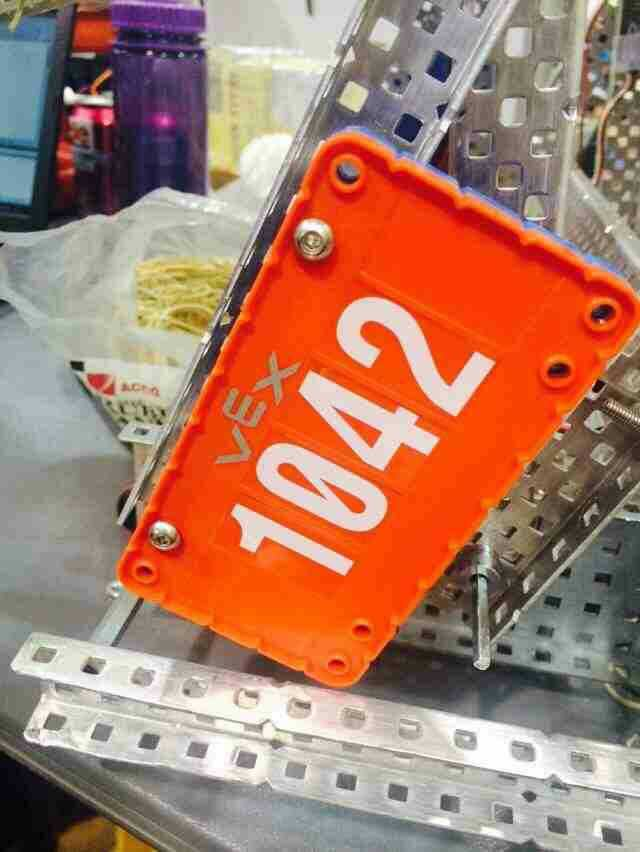"Insect First"
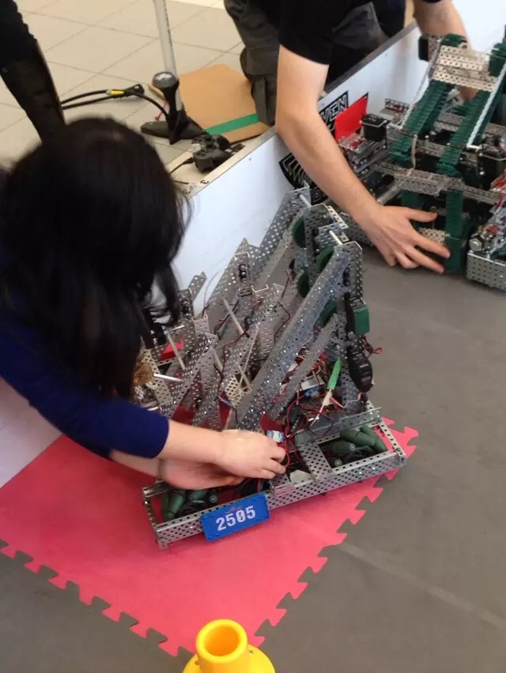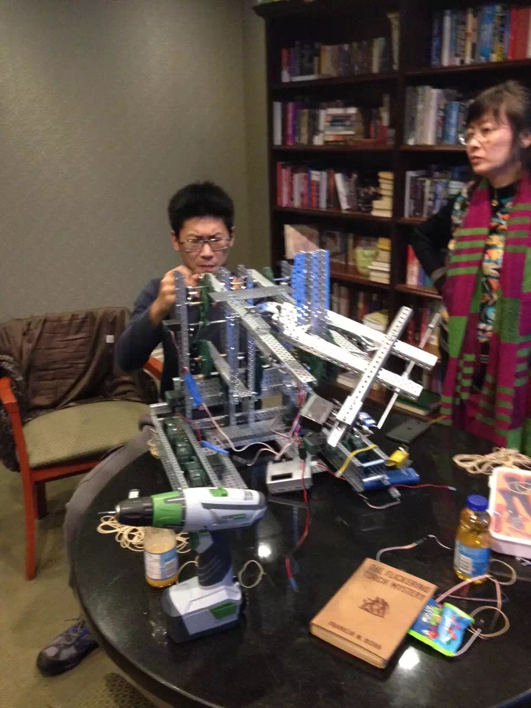
Introduction
The is the very first robot me and my other teammate built when we first started the club. It is not very competitively designed, however, is considered a milestone of the robotics team. When we went to the competition, we became the only team that uses processors and controllers that are 4 years older than the previous version. But still, we were able to manage that and kept on competing.
Defects
Here, I picked a robot from the competition with the similar lifiting mechanism with our design but different wheel setting. The only part that this robot outruns our robot is in terms of its agility. Its robot is able to turn a full cycle in 3 seconds, and our design requires 9 seconds. We were using the rubber wheel instead of the mecanum wheels which causes huge amount of friction.
-
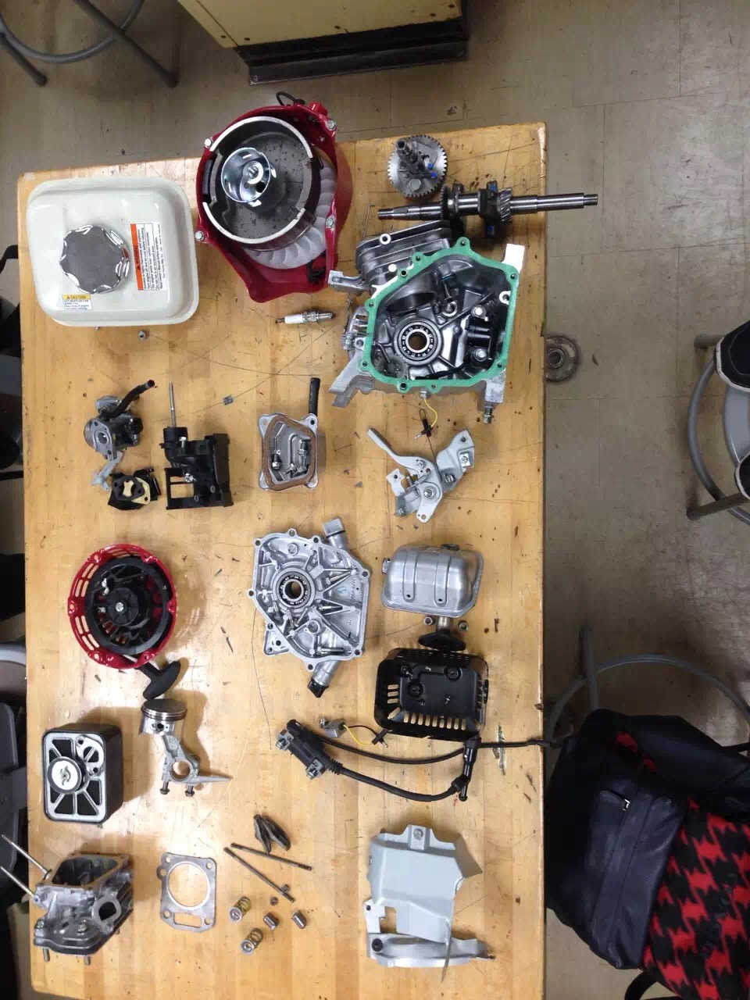Grass Cutter Engine
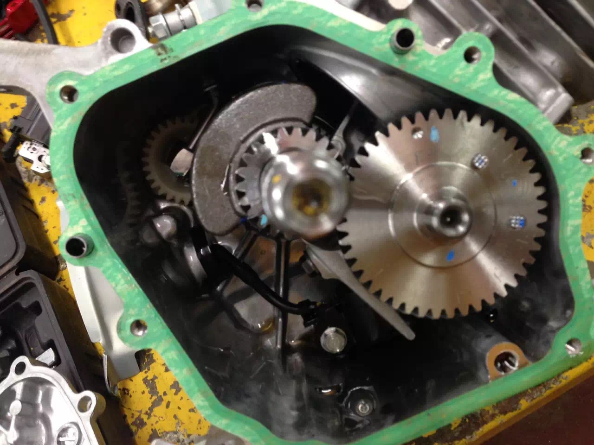
Introduction
I enjoy doing hands on works, and one of them includes fixing the engine. This is pircutre of me separating all parts of my teacher's grass cutter engine and doing some inspection and maintaince and eventually putting them back together. I used air guns with a bunch of other hand tools to take it apart. And after some lubercation, the engine was running smoothly on his machine
Challanges
The biggest challange is to fine tune the engine. It took me almost a week to just tune the engine. It is pretty hard to find the right balance between the oil and air ratio by only adjusting the two valves on the engine.
-
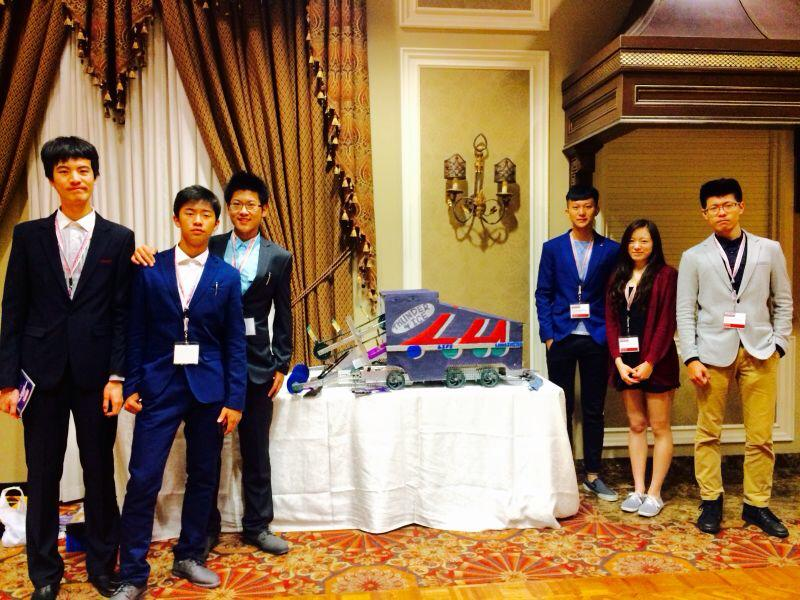project 1
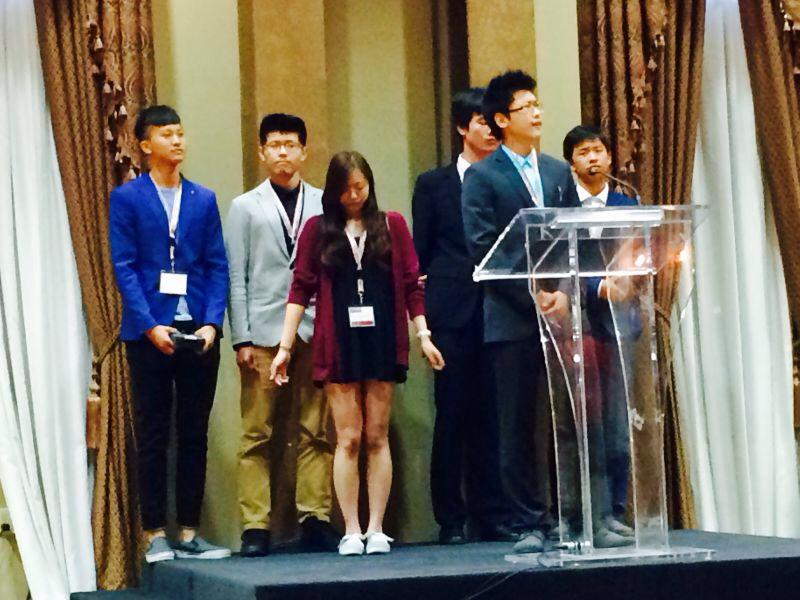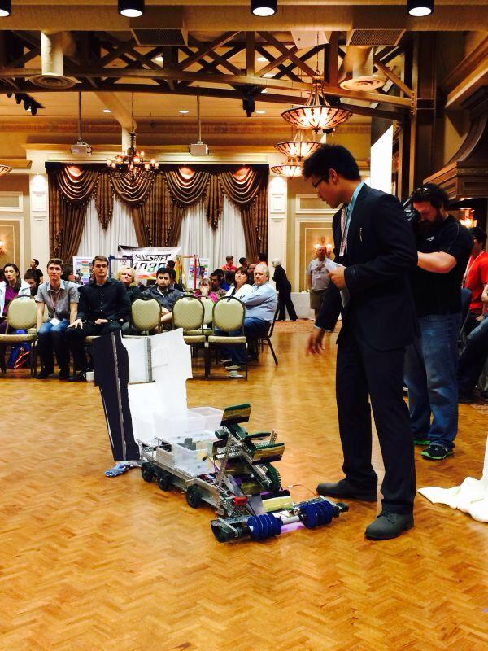
Introduction
This is one of our most successful project. The entire team went to downtown hamilton to joint the Innovation Nation Robotics Contest. We ended up winning 200$ and placed third among all teams. The purpose of this competition is to build robot prototypes that would benefit society. Since we are in Canada and Canada is famous for its hockey, we decided to build a automatic zamboni.
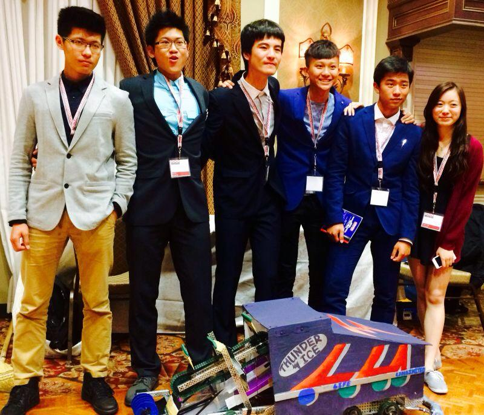Explaination
The picture on the right shows the moment when I was doing a demonstration to all judges and audiences about our mechinical components. As you can see, the back of the zamboni can be opened just like a real zamboni. The ice is going to be scrapped inside those storaging area by the spirals at the front of this zamboni. The scraped ice will go into the storage area where it gets melted and than the water is collected and sprayed onto the surface of the ice rink using the spraying system mounted at the back of this robot. The idea behind it is that there will be 6 identical robots working at the same time on the ice rink. They will be communicating with eachother and clean the ice rink much more efficiently(in roughly 3 min). This product would definitely replace the entire zamboni industry.
Final Competition
After all that many years, this becomes the last competition we joined as Thunder Ice robotics team. We challanged ourselves and made countless break throughs. Because of passion, and motivation, we were able to transform from 0 to 1. Here's the picture of the team after the competition.
-
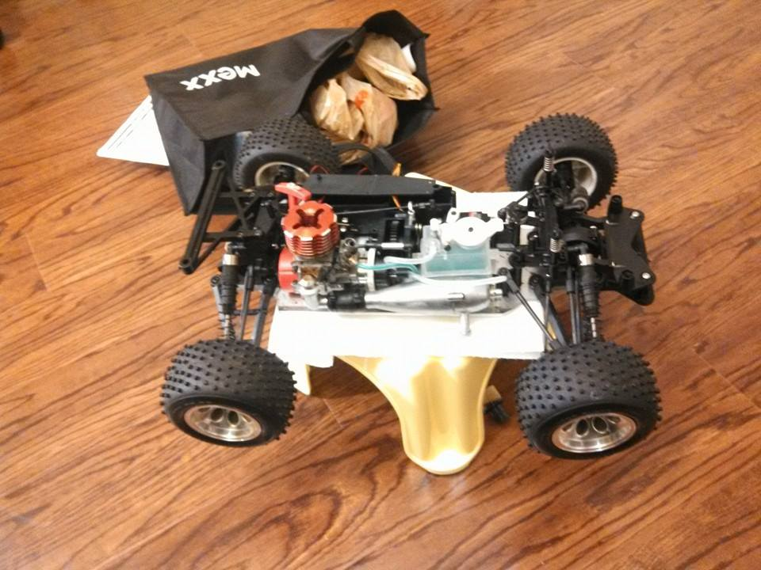project 5
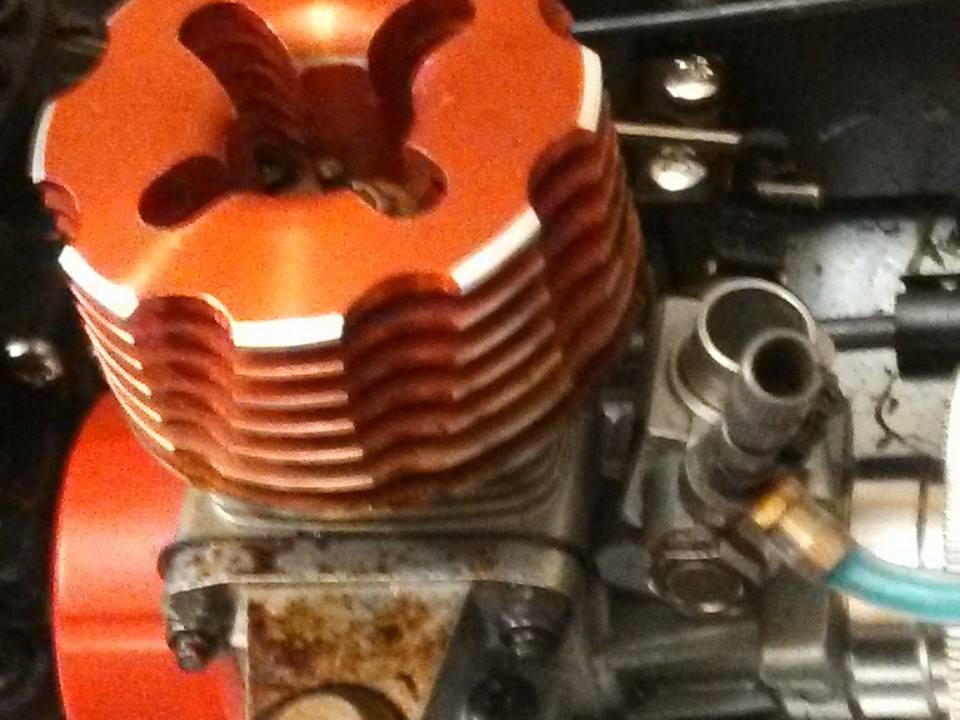
Introduction
What you are seeing right now is the 1998 japanese Nitro Powered RC Buggy. The reason why I choose this 1998 design was to challange myself. I did end up building and modifying this buggy. It took me 30 days to build and 60 days to tune up the engine(the engine wwas old and fragile). It was functioning perfectly until I added some modifications and crushed into a tree.
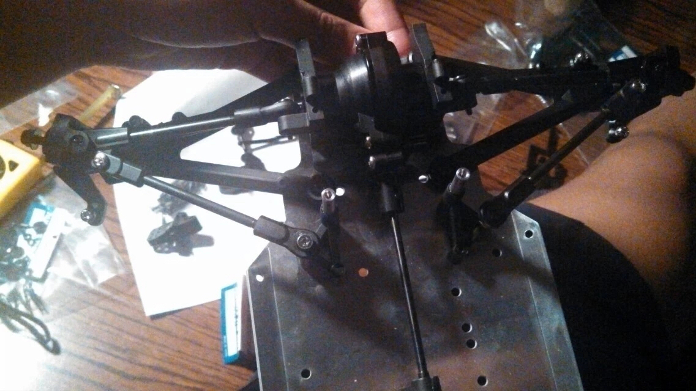Engine
Standard Nitro 2.0cc, hard to tune and hard to fix. Tuning is just to adjust the air and oil nozzle to a certain ratio so that the engine can run smoothly. I started out by just trying out every possible combinations that can be found online but failed. After that, I spent huge amount of time to just find out the pattern when I make specific changes to the nozzles. By hearing the sound of the engine running, I was able to eventually get it done. After two month of experience, I gained a better understanding of being patient.
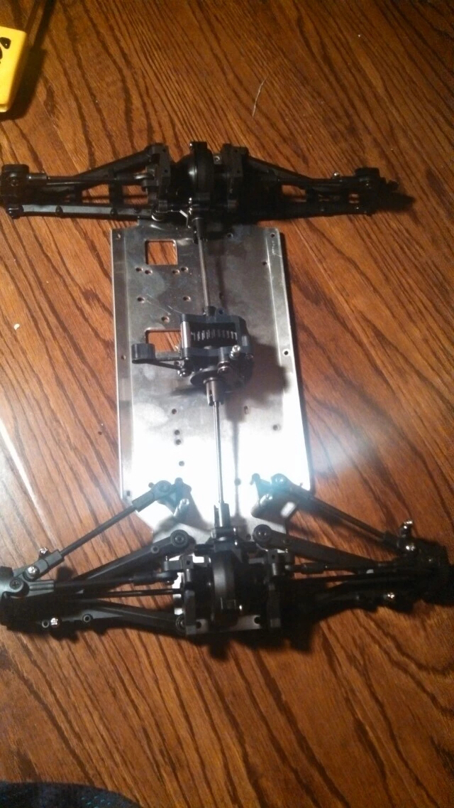Suspension System
The suspension system of this buggy was complete but not strong. It contains all the components such as differentials, shocks, but there were all made by plastic. I was trying to reenforce it by adding extra platings aroung it, but ended up complete useless.
Differentials
One last thing to point out was that the differentials on this buggy was broken, so I had to repair it manually.
-
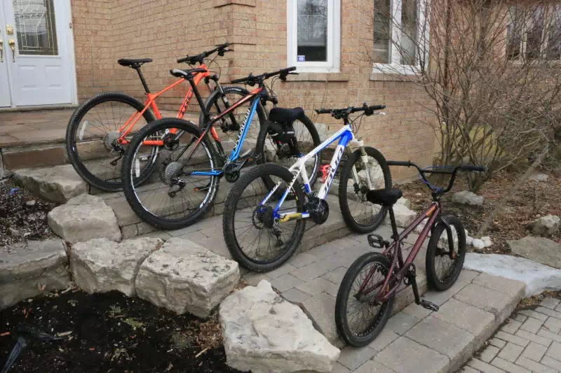project 6
project 6
Pellentesque habitant morbi tristique senectus et netus et malesuada fames ac turpis egestas. Vestibulum tortor quam, feugiat vitae, ultricies eget, tempor sit amet, ante. Donec eu libero sit amet quam egestas semper. Aenean ultricies mi vitae est. Mauris placerat eleifend leo.
-
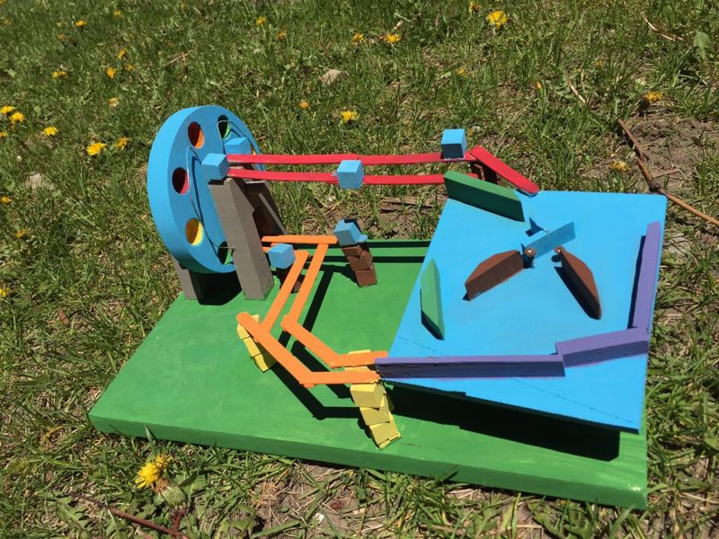project 7
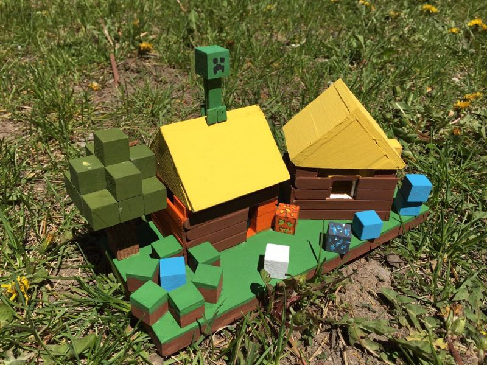
project 7
Pellentesque habitant morbi tristique senectus et netus et malesuada fames ac turpis egestas. Vestibulum tortor quam, feugiat vitae, ultricies eget, tempor sit amet, ante. Donec eu libero sit amet quam egestas semper. Aenean ultricies mi vitae est. Mauris placerat eleifend leo.
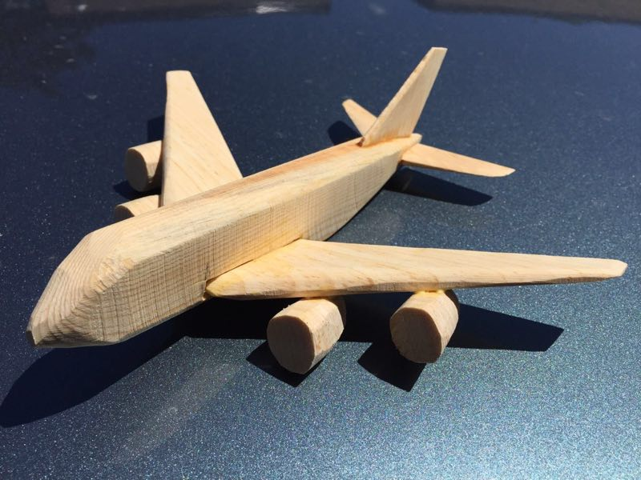project 7
Pellentesque habitant morbi tristique senectus et netus et malesuada fames ac turpis egestas. Vestibulum tortor quam, feugiat vitae, ultricies eget, tempor sit amet, ante. Donec eu libero sit amet quam egestas semper. Aenean ultricies mi vitae est. Mauris placerat eleifend leo.
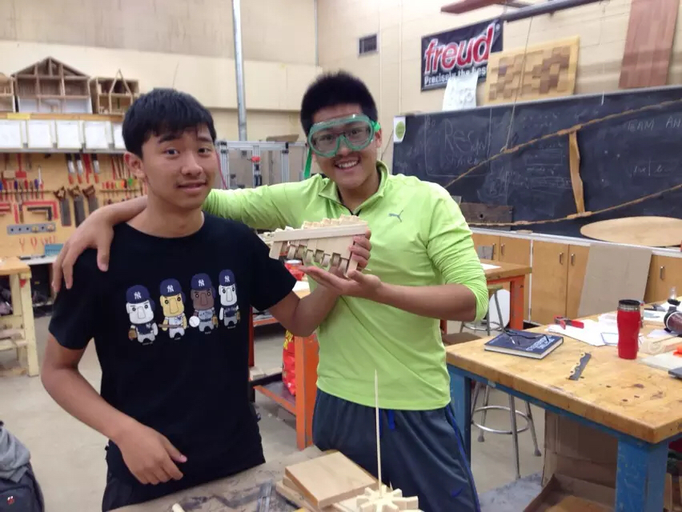project 7
Pellentesque habitant morbi tristique senectus et netus et malesuada fames ac turpis egestas. Vestibulum tortor quam, feugiat vitae, ultricies eget, tempor sit amet, ante. Donec eu libero sit amet quam egestas semper. Aenean ultricies mi vitae est. Mauris placerat eleifend leo.
project 7
Pellentesque habitant morbi tristique senectus et netus et malesuada fames ac turpis egestas. Vestibulum tortor quam, feugiat vitae, ultricies eget, tempor sit amet, ante. Donec eu libero sit amet quam egestas semper. Aenean ultricies mi vitae est. Mauris placerat eleifend leo.